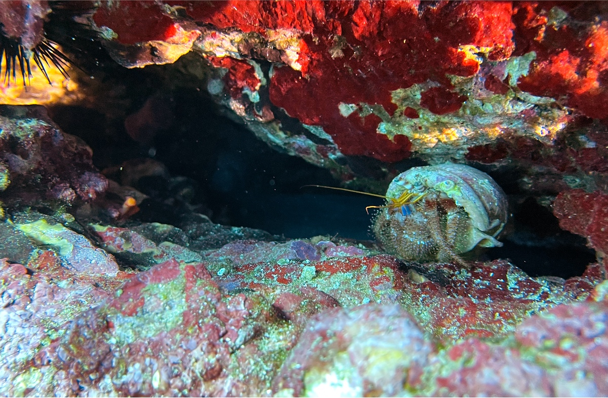
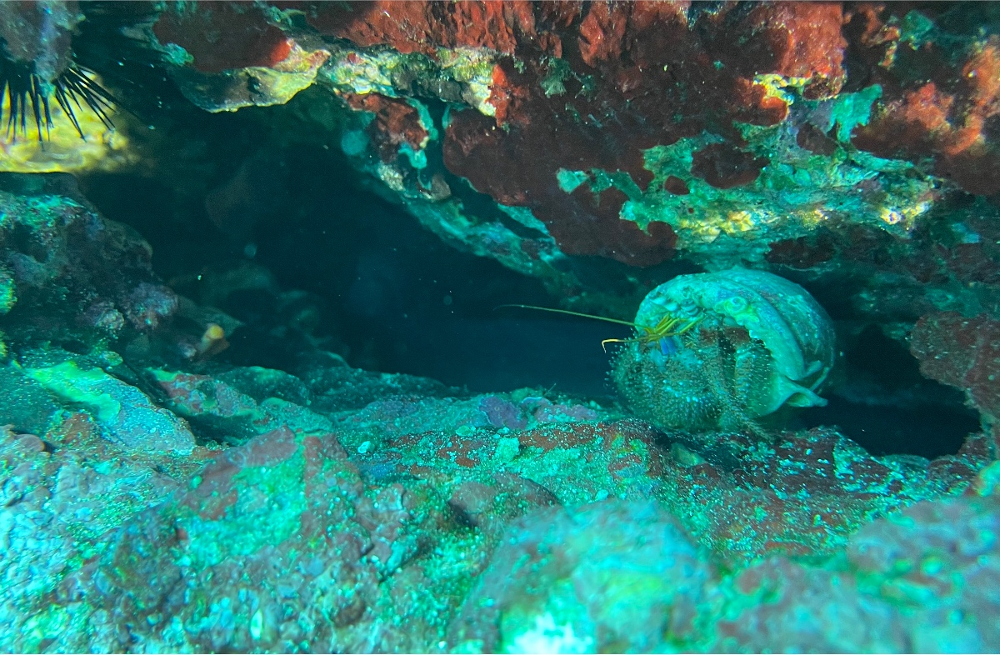

REDive corrige automatiquement la dominante bleue ou verte de vos photos et vidéos de plongée. En un geste, directement sur votre téléphone.
iPhone et iPad, bientôt Android · 5 photos gratuites par jour


ORIGINAL REDIVEGlissez pour comparer. Photo prise à l'iPhone, corrigée en mode Magique, sans autre réglage.
Pourquoi vos photos sont bleues
L'eau absorbe la lumière couleur par couleur : le rouge s'efface dès les premiers mètres, puis l'orange et le jaune. Le reste de la photo tire vers le bleu ou le vert. REDive analyse chaque image et rééquilibre ses couleurs, en gardant le bleu de l'eau naturel.
Dans l'app
Trois façons de corriger
REDive analyse chaque photo et chaque vidéo et la corrige seul, sujet en priorité.
Naturel, Chaud, Doré ou Profond, calculés pour chaque prise ; puis luminosité, chaleur et vibrance.
Intensité, exposition, contraste, ombres, teinte, saturation, et une pipette : touchez du sable blanc pour un point neutre parfait.
Pensé pour les plongeurs
Importez depuis Photos ou Fichiers, corrigez, enregistrez tout en une fois. Collez vos réglages sur le reste de la plongée, partagez un avant / après en un geste.
La correction suit la lumière tout au long du clip. Raccourcissez et recadrez avant d'enregistrer.
Les fichiers .GPR des caméras GoPro sont pris en charge sur iPhone et iPad.
REDive ajoute une copie corrigée à votre photothèque ; la date et le lieu de l'original sont conservés.
Les photos sont enregistrées en Display P3, comme l'appareil photo : les rouges retrouvés ne sont pas écrêtés.
Tout est calculé sur le téléphone : sur le bateau, sans réseau, ça marche.
Confidentialité
Aucune photo ne quitte votre appareil. REDive n'a ni serveur, ni compte, ni publicité, ni mesure d'audience.
Prix
Les photos HEIC et JPEG, et les vidéos MP4 et MOV en H.264, HEVC ou ProRes, de l'iPhone comme des caméras GoPro, DJI ou Insta360. Sur iPhone et iPad, aussi les RAW : DNG, Apple ProRAW et GoPro RAW (.GPR, HERO5 et suivantes). Les vidéos HDR sont converties en SDR.
Non. REDive travaille sur une copie et enregistre une nouvelle photo corrigée dans votre photothèque. L'original reste tel quel.
Non pour corriger et enregistrer : tout se fait sur l'appareil. L'app lit seulement l'heure sur internet pour compter les photos gratuites.
REDive rééquilibre les couleurs présentes dans le fichier ; il ne peut pas inventer une couleur que l'appareil n'a pas du tout captée. Une lampe ou un flash donne toujours les meilleurs résultats, et le mode Expert permet d'aller plus loin.
Oui, sur tous les appareils liés au même compte Apple ou au même compte Google, avec « Restaurer les achats ».